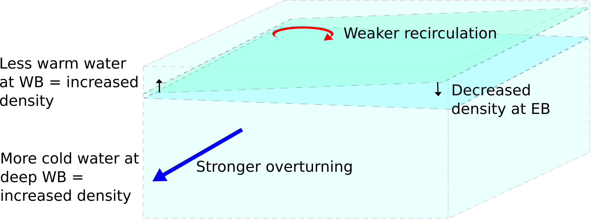
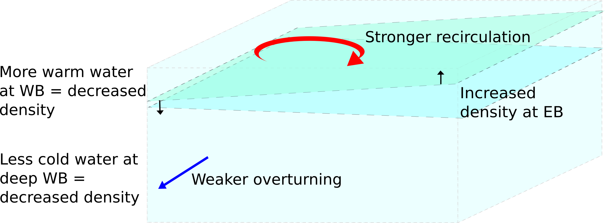
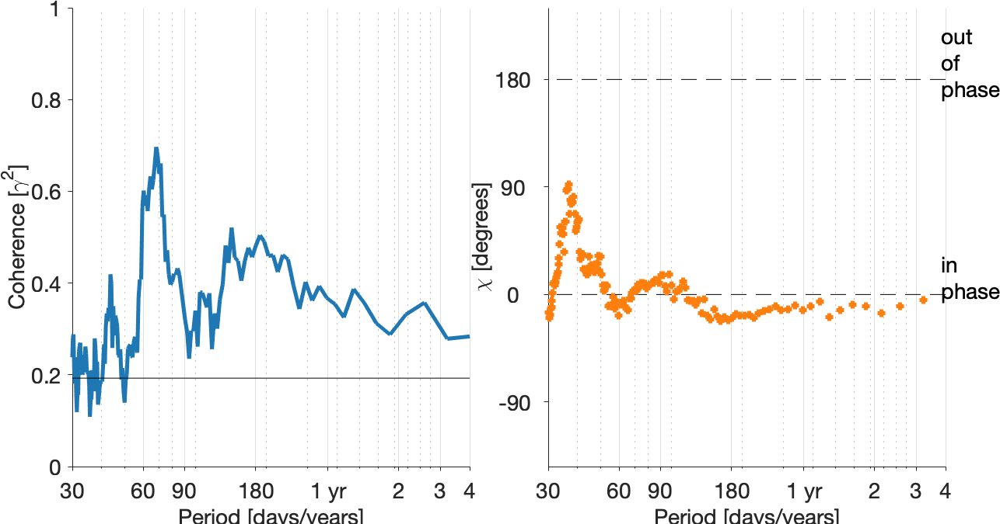

Simplifying the Dynamics of the Atlantic Meridional Overturning Circulation at 26°N
Emma Worthington
Gerard McCarthy, Robert Marsh, Jenny Mecking, Sybren Drijfhout
PhD confirmation presentation, 27 June 2019
Overview
- Atlantic Meridional Overturning Circulation
- Why do we want to simplify its dynamics?
- Why a very simple regression model doesn't work
- More complex regression models
- Conclusions
Atlantic Meridional Overturning Circulation
(AMOC)
AMOC observed by RAPID array at 26°N

[www.rapid.ac.uk]
Observations of the AMOC
Hydrographic sections
1957 to 2004

[Data from Bryden et al., 2005]
RAPID timeseries
2004 to present
[www.rapid.ac.uk]
Can we learn more about the AMOC before 2004?
Other hydrographic data is available prior to 2004 e.g. repeat CTDs, short mooring arrays, but it is not sufficient to estimate AMOC as RAPID does.
Can we simplify the dynamics of the overturning circulation using a linear regression model?
Longworth et al. (2011) used temperature at a depth of 400 dbar at the western boundary as a proxy for thermocline transport.
39 values between 1986 and 1998
Repeat WB CTD stations
155 monthly mean values between 2004 and 2017
RAPID WB profile
Longworth regression model explained 53% of the observed thermocline transport variance
RAPID data regression model explains only 10%
How can it be improved?
Using the temperature anomaly at 780 dbar depth improves explained variance to 33%
A single layer regression model cannot capture the dynamics of the overturning circulation
What does the mid-ocean overturning circulation look like at 26°N?
Temperature

Isotherms (and isopycnals) slope up to the east above 1000 m, down to the east below
$$ \frac{\partial{\rho}}{\partial{x}} = - \frac{f \rho_0}{g} \frac{\partial{v}}{\partial{z}} $$
EB > WB
WB > EB
=
=
negative shear
positive shear
Mid-ocean transport
Southwards above ~800 m and below ~1100 m, with an intermediate northwards layer
Variability in the mid-ocean (geostrophic) AMOC component is defined by partition between two southwards transports:
Recirculation in the upper layer
vs.
Deep overturning return flow (NADW)
To capture this variability, at least 3 layers need to be represented by the regression model
Multiple layer regression model
Selecting explanatory variables
Strong correlation between isopycnal displacements and UMO transport on both western (solid) and eastern boundaries (dashed) above 1400 m
Fig. 8, Frajka-Williams et al., 2016
Strong correlation between deep western boundary isopycnal displacements and LNADW transport
Selecting explanatory variables
Fig. 11, Péréz-Hernández et al., 2015. EB seasonal salinity anomaly (black contours) and density anomaly (coloured contours).
UMO seasonality is driven by eastern boundary density anomalies
Salinity minimum near 1000 m in September associated with stretching of isoneutrals and increased northwards transport
UMO weakest from Jul-Dec, with peak northwards anomaly Sep-Oct
Chidichimo et al., 2010; Péréz-Hernández et al., 2015
Density anomalies and circulation changes
Positive UMO anomaly: weaker southwards recirculation
Negative UMO anomaly: stronger southwards recirculation
Temperature
Layer model
At which combination of depths 1–4 do the boundary density anomalies give the highest variance explained by the regression:
$$ UMO = \alpha \dot{}\rho^{1}_{wb} + \beta\dot{}\rho^{2}_{eb} + \gamma\dot{}\rho^{3}_{wb} + \zeta\dot{}\rho^{4}_{wb} $$
Model Results
$$ UMO = \alpha\dot{}\rho^{740}_{wb} + \beta\dot{}\rho^{1020}_{eb} $$
58% variance explained

$$ UMO = \alpha\dot{}\rho^{740}_{wb} + \beta\dot{}\rho^{1020}_{eb} + \color{#ff7f0e}{\gamma\dot{}\rho^{2840}_{wb}} $$
63% variance explained
$$ UMO = \alpha\dot{}\rho^{680}_{wb} + \beta\dot{}\rho^{900}_{eb} + \gamma\dot{}\rho^{1200}_{wb} + \color{#ff7f0e}{\zeta\dot{}\rho^{4100}_{wb}} $$
70% variance explained
All linear regressions so far have been ordinary least-squares (OLS) models
As they are based on a time series, OLS models fail the following assumptions:
- Autocorrelation of residuals
- Homoscedasticity (equal variance of residuals)
- Normal distribution of residuals

An alternative model is a generalized least-squares with autocorrelated errors (GLSAR) McKinney et al., 2019
The significant partial autocorrelation gives the number of lags
GLSAR(1) model
$$ UMO = 38.04 \ \rho_{wb}^{720} - 100.53 \ \rho_{eb}^{880} + 54.83 \ \rho_{wb}^{1300} + 129.05 \ \rho_{wb}^{4100} $$
Model results: Explained variance = 73%, SE of regression = 1.35
Prediction results: RMSE = 2.3 Sv
Cross-validation
Regression model created using first and last 60%, 70%, 80% and 90% of data
Model predicts UMO transport using remaining 40%, 30%, 20% and 10%

| Min | Max | Mean | |
|---|---|---|---|
| Explained variance | 74% | 81% | 77% |
| SE [Sv] | 1.1 | 1.3 | 1.2 |
| Min | Max | Mean | |
|---|---|---|---|
| RMSE [Sv] | 2.1 | 2.8 | 2.3 |
| Percent in PI | 58% | 87% | 73% |
Coherence between UMO and density anomalies
Thermocline [720 dbar]
AAIW [880 dbar]
UNADW [1300 dbar]
LNADW [4100 dbar]
Conclusions
- Shown that single-layer models (e.g., Longworth et al., 2011) cannot capture the dynamics of the overturning circulation
- At least 3 layers are required to explain more than 60% variance of UMO transport
- 4-layer GLSAR model explains 73% of the variance in the observed UMO transport
- Uncertainty: cross-validation shows mean RMSE of 2.3 Sv
- Regression model captures variability on all timescales:
- Seasonal variability dominated by AAIW layer
- Longer timescale variability found in thermocline and deeper layers
- Changes in RAPID data (e.g., WB2 mooring collapse) increase error between model and observations
- Model is sensitive to depth of density anomalies, which may be an issue with sparsely-deployed instruments
Future work
- Test model against new RAPID results and hydrographic section data - is level of uncertainty reasonable?
- Assess whether seasonal climatology can replace eastern boundary variable
- Apply model to historical CTD and mooring data
- Investigate model further using NEMO ocean model with 1/12° resolution
References
Bryden, H. L., Longworth, H. R., & Cunningham, S. A. (2005). Slowing of the Atlantic meridional overturning circulation at 25°N. Nature, 438(7068), 655–657.
Chidichimo, M. P., Kanzow, T., Cunningham, S. A., Johns, W. E., & Marotzke, J. (2010). The contribution of eastern-boundary density variations to the Atlantic meridional overturning circulation at 26.5°N. Ocean Science, 6(2), 475–490.
Frajka-Williams, E., Meinen, C. S., Johns, W. E., Smeed, D. A., Duchez, A., Lawrence, A. J., … Rayner, D. (2016). Compensation between meridional flow components of the Atlantic MOC at 26°N. Ocean Science, 12(2), 481–493.
Longworth, H. R., Bryden, H. L. and Baringer, M. O. (2011) Historical variability in Atlantic meridional baroclinic transport at 26.5°N from boundary dynamic height observations, Deep-Sea Research Part II (58), 1754–1767.
McKinney, W., Perktold, J., & Seabold, S. (2019). Time Series Analysis in Python with statsmodels.
Pérez-Hernández, M. D., McCarthy, G. D., Vélez-Belchí, P., Smeed, D. A., Fraile-Nuez, E., & Hernández-Guerra, A. (2015). The Canary Basin contribution to the seasonal cycle of the Atlantic Meridional Overturning Circulation at 26°N. Journal of Geophysical Research: Oceans, 120(11), 7237–7252.